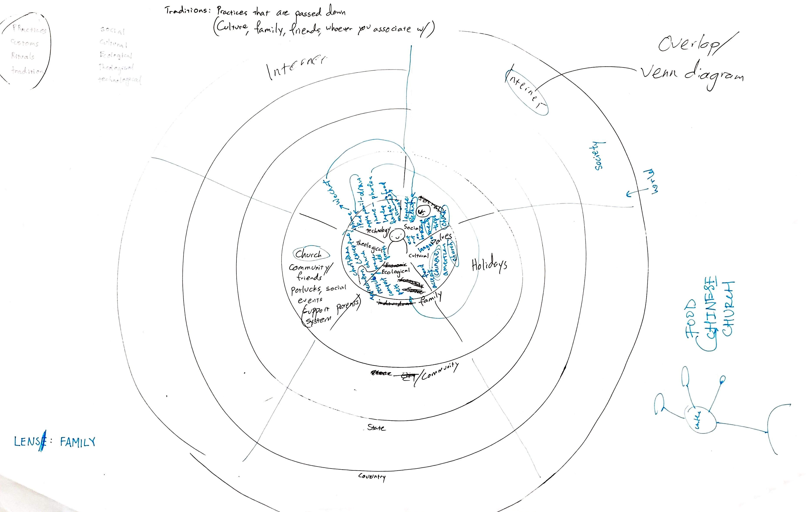
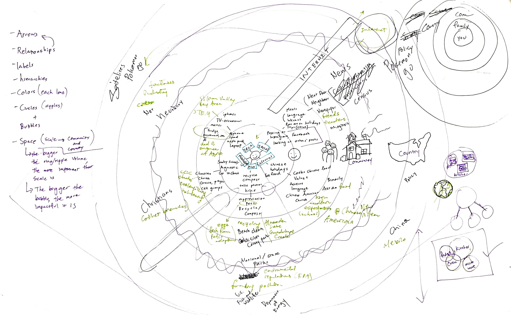
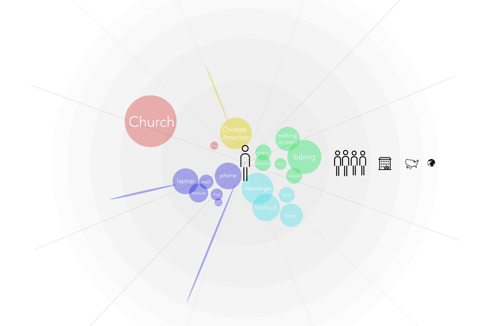
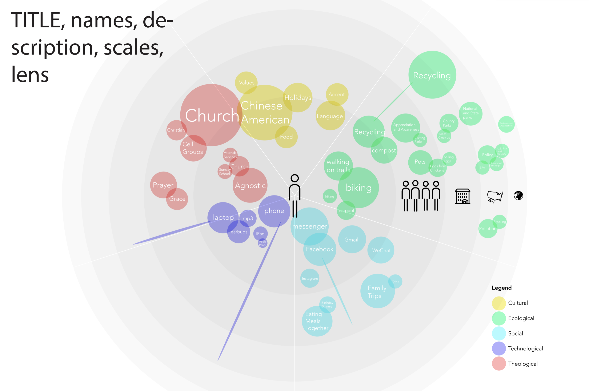

With your partner, create a 24x36 poster visualizing a person's identity from a systems perspective—through five different scales and five different lenses. Try to convey the information in the clearest and most appealing way possible. Think about how to show connections between different points of data.
—
Scales/Lenses
Sketching


Illustrator


Refinement
Final